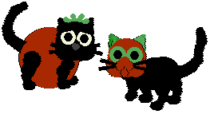
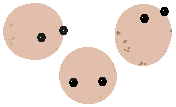
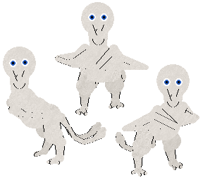

Hexed pets I've made that you can download!
Smado & Snudder Mado

Inspired by this post by catcrumb.
Tabby base. Added 8.16.2021
Joshua

Son of Wayneradiotv. Likes cowboys and cashews. Swears at you.
Uses "joshie" sounds (included)
Calico base. Added 11.6.2021
Greature

She loves treats.
Based off of a number of tumblr posts which feature a photo of this sculpture.
Breedfile version available here.
Uses the PFMice sounds riped by Carolyn.
Mau base. Added 8.25.2021